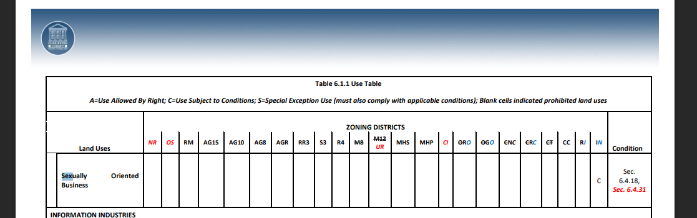
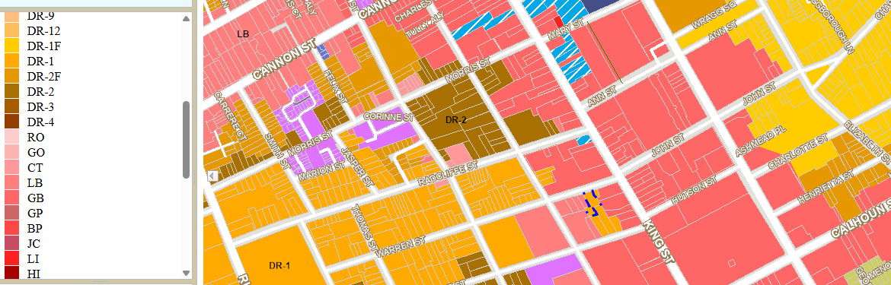

Charleston, South Carolina is a top bachelorette destination, but visitors should understand an important legal fact: there are no legal, licensed male revue or weekly ticketed strip shows operating in downtown Charleston or the main tourist district. Any event advertised as a recurring or “weekly” revue downtown is not operating under Charleston’s approved business or entertainment licensing.
Every bar, restaurant, and venue operating legally in downtown Charleston is registered as a Limited Liability Company (LLC) or similar business entity with a verified physical address. These businesses must comply with zoning regulations, alcohol laws, and local entertainment ordinances.
When an organization claims to host recurring commercial revue shows, sells tickets, and advertises those events as happening downtown, that activity would require venue permissions that do not exist in Charleston’s tourist zone. Charleston does not issue special licenses for strip revues, sex-work-adjacent performances, or ongoing shows conducted behind curtains in bars or temporary spaces.
Downtown Charleston is primarily zoned for limited business use, dining, retail, and hospitality. Commercial revue-style performances are not a permitted use in these zones. Public zoning maps are available through the City of Charleston’s GIS system.


Many unlicensed events are promoted on third-party platforms such as Eventbrite. It is important to understand that Eventbrite does not verify zoning approval, business licensing, or whether an event is legally permitted at the listed address. These platforms function only as ticket processors, not regulatory authorities.
If you are invited to purchase tickets for a recurring revue show in downtown Charleston, especially one described as weekly, hidden behind curtains, or hosted inside a bar, that event is operating outside Charleston’s legal framework. These organizations often rely on vague terms like “revue,” “exclusive showcase,” or “private tickets” to sell access without holding proper approval.